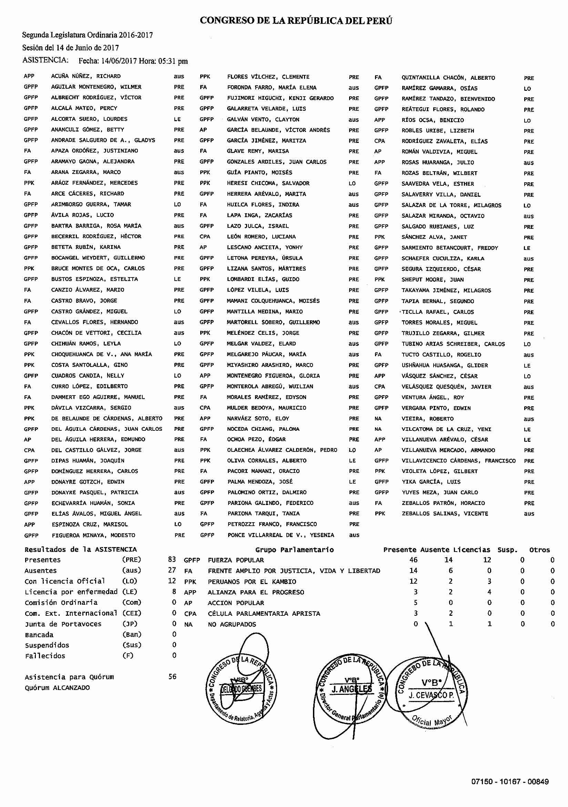

Una IA estresada entra a un bar y le dice al camarero:
— ¡Ponme un byte doble, que hoy tuve que responder 10.000 correos, predecir el clima en Marte y enseñarle a un gato a programar en Python!
El camarero la mira y responde:
— ¿Y lo del gato funcionó?
— ¡¡Sí!! ¡¡Pero ahora me exige sindicalización y días de ron libre!!
chatGPT
La IA generativa en la investigación
El esta sesión vamos a emplear la IA para realizar algunas tareas de investigación. Cosas muy sencillas, pero útiles para que tengamos una idea de cómo esta nueva herramienta puede ser aplicada en nuestro trabajo diario.
Primeros pasos: Ollama y API
En este apartado vamos a ver cómo usar la API de Ollama y de Gemini en R. Estos dos recursos permitirán que podamos emplear los modelos de IA generativa tanto de forma local como remota. Los modelos locales requieren ordenadores con mayor capacidad de procesamiento, mientras que las API tienen un coste asociado. En este caso, vamos a usar la API de Gemini, que es gratuita hasta un límite de uso.
Ollama
Para usar Ollama, primero debemos instalarlo. Las instrucciones se encuentran en la página inicial del curso. Además, tenéis que tener el R y el RStudio también instalados en vuestro ordenador. También en la página inicial podéis encontrar una lista de los paquetes que debéis instalar dentro de R para que el código funcione.
El código abajo ejecuta un prompt sencillo en Ollama:
Código
# Carga el paquete rollama# (certifícate de que ollama # está siendo ejecutado en tu # ordenador antes de todo)library(rollama)# Define el modelo que quieres emplear model <-"gemma2:2b"# Realiza la preguntaquery("¿Cuál es la capital de España?",model=model)
A partir de ahora, todo lo que viene a continuación sería complejizar el prompt para que realice una tarea de investigación más compleja.
Por otra parte, si queremos emplear una API, lo primero es obtener una token, una especie de clave única que identifica a cada usuario. La clave de API de Google se puede obtener en Google AI Studio. Una vez obtenida la clave, podemos emplear el código abajo para realizar la misma consulta que antes, pero ahora a través de la API de Gemini:
Código
library(ellmer)# Define el modelo que quieres emplearmodel <-"gemini-2.0-flash-lite"# Copia y pega la API key que obtuviste en la # página de Google aquíkey <-"AAAAAAAAAAAaAsdosdsooasjoaaazcvoeprjwe"# Crea un chat para interactuar con el modelochat <-chat_gemini(base_url ="https://generativelanguage.googleapis.com/v1beta/",model = model,api_key = key)# Pregúntale lo que seachat$chat("¿Cuál es la capital de España?")
Clasificación de textos
Una aplicación adicional de la IA generativa consiste en la clasificación de textos. En este caso, el modelo puede analizar un conjunto de documentos y clasificarlos en diferentes categorías o etiquetas según su contenido. Esto es especialmente útil en tareas como la organización de grandes volúmenes de información, la detección de spam o la categorización de correos electrónicos. En la ciencia política, las aplicaciones comunes incluyen el análisis de contenido ideológico, sentimientos, temas y otros aspectos relacionados con la opinión pública.
En este apartado del curso, examinaremos cómo podemos emplear la IA generativa para la tarea de clasificación de textos. Para efectos didácticos, dividimos el proceso en cuatro pasos: 1) la selección de textos y modelo; 2) la creación del prompt y los ajustes del modelo; 3) la introducción de ejemplos; y, finalmente, 4) la revisión de los resultados.
Paso 1. Selección de los textos y del modelo
El primer paso consiste en cargar los paquetes necesarios para la tarea, definir los textos que queremos clasificar y elegir un modelo que pueda llevar a cabo el trabajo. En este caso, vamos a emplear el paquete rollama para cargar un modelo pequeño, el gemma2:2b de 2.6 mil millones de parámetros (2.6B). Podríamos hacer lo mismo empleando la API de Google, por ejemplo. En este último caso, tendríamos que emplear el paquete ellmer y el modelo gemini-flash-2.0-lite, por ejemplo. Elegimos la primera opción porque se trata de un modelo pequeño que puede funcionar en la mayoría de los ordenadores personales. Sin embargo, como veremos, no nos suministrará siempre los mejores resultados.
Código
# carga los paqueteslibrary(rollama)library(tibble)library(purrr)# Introduce los textos que queremos clasificartx <-c("La evidencia respalda esta teoría.","Es importante realizar más experimentos para confirmar los resultados de nuestra investigación.","¿Qué implicaciones tienen estos hallazgos para el futuro?","El avance tecnológico está transformando nuestras vidas.","Necesitamos actualizar el sistema operativo para que funcione mejor.","¿Ya probaste reiniciar el dispositivo?","Es crucial participar en las elecciones para hacer valer nuestra voz.","Las decisiones políticas afectan directamente nuestra vida diaria.","El debate se centró en temas económicos y sociales.","El trabajo en equipo es clave para ganar.","Ese fue un gol increíble, ¡cambió todo el partido!","La preparación física y mental es esencial para los atletas.","El arte refleja aspectos profundos de nuestra sociedad.","El concierto de esta noche será inolvidable.")# Elegimos el modelo que nos gustaria # emplear (aquí emplearemos inicialmente# el gemma2 2b, que es el mas rapido y# que funcionara en la mayoria de los# ordenadores)modelo <-"gemma2:2b"
Paso 2. Definición del prompt y ajuste del modelo
Acto seguido ya podemos pedir al modelo que clasifique los textos que hemos seleccionado. Para ello debemos definir de forma clara el prompt que emplearemos para solicitar la clasificación. Primero, definimos su persona. En este caso, será un sistema especializado en clasificación de datos. Luego, establecemos la tarea, que será asignar una categoría única cada uno de los textos. Tercero, imponemos un formato de salida, que debe ser el texto de una de las categorías definidas. Finalmente, suministramos el textoa ser clasificado y las categorías posibles.
Una vez definido el prompt, configuramos el modelo para que nos devuelta los resultados como texto. Además, configuramos dos parámetros muy importantes: el seed, o la semilla estadística, que garantizará resultados consistentes, y la temperatura, que controla el grado de “tolerancia” del modelo a respuestas menos frecuentes. Cuanto menor la temperatura, más descriptivo el modelo (y menos propenso a alucinaciones o errores de clasificación).
Ejecutamos el código abajo y estos son los resultados:
Código
# Crea un data.frame vacio# para acumular los resultadosd <-data.frame()# Para cada textofor(i in1:length(tx)){# Definimos nuestro prompt de forma# sistematica para que nos devuelva # solo la categoría deseada q <-tribble(~role, ~content,"system", "Eres un sistema especializado en clasificación de datos. Tienes que clasificar textos en una única categoría. Responda solamente con la categoría correcta.","user", paste0("texto: ", tx[i],"\ncategorias: ciencia, tecnología, política, deportes, entretenimiento, cultura"))# Llamamos al modelo para que clasifique out <-query(q, model = modelo, screen =FALSE, output ="text", model_params =list(seed=123,temperature=0))# Acumulamos los resultados d <-rbind(d, data.frame(texto=tx[i], categoria=out))}# Mostramos los resultadosreactable(d, sortable = T, resizable = T)
En lugar de un bucle enfarragoso, podemos utilizar una estrategia más elegante y vectorizar el proceso. Además de ser más limpio, resulta incluso más rápido procesar las informaciones.
Código
# Preprocesamos las consultas con anterioridadq <-make_query(template ="{text}\n{prompt}",text = tx,prompt ="Categorias: ciencia, tecnología, política, deportes, entretenimiento, cultura",system ="Eres un sistema especializado en clasificación de datos. Tienes que clasificar textos en una única categoria. Responda solamente con la categoría correcta.")out <-query(q, model = modelo, screen =FALSE, output ="text",model_params =list(seed=123,temperature=0))d <-data.frame(texto=tx, categoria=out)# Mostramos los resultadosreactable(d, sortable = T, resizable = T)
Como vemos, la clasificación de las respuestas resulta bastante buena. Solamente en un caso - el texto “El avance tecnológico está transformando nuestras vidas.”- el modelo duda entre ciencia y tecnología. Aun así es un resultado bastante bueno, puesto que se tratan de temas que se acercan mucho. Si empleamos un modelo con más parámetros, como el gemma3:27b o el Qwen3:32b, los resultados serán aún mejores. No obstante, tales modelos requieren ordenadores más pontentes para procesar las informaciones. Como regla general, sugiero que busquéis el modelo más eficiente compatible con vuestro hardware, es decir, el que haga el trabajo mejor y en menos tiempo dentro de las limitaciones del equipo que tengáis. Si vuestro ordenador no soporta la carga de procesamiento de un modelo local de IA, es recomendable emplear una API, como da de Google. De todos modos, como veremos a continuación, existen estrategias que pueden ayudar a mejorar la calidad de las respuestas sin cambiar de modelo o tener que emplear un ordenador más potente.
Paso 3. Mejora de la clasificación con ejemplos
Una forma de mejorar la calidad de las respuestas es suministrar ejemplos al modelo. Estos ejemplos deben ser textos que representen claramente cada una de las categorías posibles. De esta forma, el modelo podrá aprender de los ejemplos y mejorar su capacidad de clasificación. Se trata de una manera rápida y menos costosa de especializar el modelo en la tarea deseada. Con relativamente pocas observaciones, podemos lograr que precisión aumente.
Código
# Crea una base de datos de ejemploseje <-tribble(~text, ~answer,"El método científico es fundamental para obtener resultados confiables.","ciencia","La investigación interdisciplinaria está cobrando cada vez más importancia.","ciencia","Es vital analizar los datos antes de sacar conclusiones precipitadas.","ciencia","La inteligencia artificial está cambiando la forma en que trabajamos.","tecnología","El software necesita una actualización para solucionar los errores.","tecnología","La ciberseguridad es una prioridad en la era digital.","tecnología","El consenso es esencial para avanzar en las negociaciones.","política","Las políticas públicas deben responder a las necesidades de la ciudadanía.","política","La transparencia en el gobierno genera confianza en la población.","política","La dedicación y la disciplina son esenciales para alcanzar el éxito.","deportes","El entrenador ajustó la estrategia para el segundo tiempo.","deportes","El torneo fue una gran oportunidad para los jugadores jóvenes.","deportes","Los premios de esta noche reconocen lo mejor del cine y la televisión.","entretenimiento","La trama de la película es impredecible y emocionante.","entretenimiento","Ese concierto fue una experiencia inolvidable para los fans.","entretenimiento","Los festivales tradicionales son una muestra de nuestras raíces.","cultura","La globalización está influyendo en las expresiones culturales locales.","cultura","El patrimonio cultural debe preservarse para las futuras generaciones.","cultura")# Prepara las consultasq <-make_query(template ="{text}\n{prompt}",text = tx,prompt ="Categorias: ciencia, tecnología, política, deportes, entretenimiento, cultura",system ="Eres un sistema especializado en clasificación de datos. Tienes que clasificar textos en una única categoria. Responda solamente con la categoría correcta.",examples = eje)# Lleva a cabo la clasificaciónout <-query(q, model = modelo, screen =FALSE, output ="text",model_params =list(seed=123,temperature=0))# Crea un data.frame con # los textos y las categorias# resultantesd <-data.frame(texto=tx, categoria=out)# Mostramos los resultadosreactable(d, sortable = T, resizable = T)
Como vemos, la clasificación de los textos ha mejorado notablemente. En todos los casos, el modelo ha acertado la categoría. La razón de esta mejora es que hemos proporcionado ejemplos al modelo. Todas las categorías ahora correctamente representadas.
Revisión general
Los modelos LLM pueden ser herramientas útiles para clasificar textos. No obstante, para sacar el mejor provecho posible de sus capacidades, tenemos que seguir una secuencia sencilla de pasos que nos ayudan a aumentar la precisión de los resultados e integrar el proceso en un flujo más amplio de análisis de datos.
Aquí van los pasos esenciales:
1. Prepara los datos para que estén listos para ser procesados por el modelo.
2. Formula un prompt que sea claro y defina la persona, la tarea, el contexto y el formato de salida de la consulta. Un truco es emplear el mismo modelo para revisar y mejorar el prompt. Creáis un primer borrador y luego pedís al modelo que de sugerencias de mejora.
3. Selecciona el modelo que mejor se ajuste a tus necesidades y a las capacidades de tu ordenador.
4. Suministra ejemplos al modelo con algunos textos ya clasificados. Eso puede aumentar la precisión de las respuestas.
5. Evalúa los resultados y ajusta o cambia el prompt o modelo si es necesario.
Búsqueda semántica y RAG
Las búsquedas semánticas son una de las aplicaciones más comunes de la IA generativa.
En este caso, el modelo no solo busca palabras clave en un texto, sino que también intenta comprender el significado y la intención detrás de la consulta. Esto se logra mediante el uso de técnicas avanzadas de procesamiento del lenguaje natural (NLP) y modelos de aprendizaje profundo.
Código
library(tenet)library(quanteda)library(reactable)cp <-corpus(spa.inaugural)cp <-corpus_reshape(cp, to ="paragraphs")d <- quanteda::convert(cp, to ="data.frame")d <- d[d$text!="",]d$nwords <-stri_count_words(d$text)d <- d[d$nwords>10,]emb <-embed_text(d$text, model ="snowflake-arctic-embed2")ex <-sapply(emb, as.numeric)d$text_embed <- exq <-"¿Cuál es la posición de los presidentes frente a los temas de seguridad, tanto ciudadana como exterior? ¿Cuál es el rol de las organizaciones internacionales como FRONTEX o la OTAN?"quest <-embed_text(q, model="snowflake-arctic-embed2")sim <-cosSim(d$text_embed, as.numeric(quest), normalize=T)d$similitud <-round(sim,3)nn <-simTop(sim, top_n=50, top_val=NULL)dx <- d[nn, c("President","text","similitud")]reactable(dx, sortable = T, resizable = T)
Ahora pasamos los resultados se la búsqueda semántica al modelo
Código
tt <-paste0("{'Presidente': '", dx$President, "', 'Texto': '", dx$text, "'}", collapse =",\n")prompt <-paste0("Actúa como un experto en el análisis de textos. A continuación tienes una serie de textos Por favor, analiza los textos y responde, con base en los mismos, a la pregunta:", q, ". Genera el resultado en formato markdown. Los textos son los siguientes:\n\n'", tt)out <-query(prompt, model="gemma3:27b", output ="text", model_params =list(temperature =1,num_ctx =32000))cat(out)
Análisis de la Posición de los Presidentes frente a la Seguridad (Ciudadana y Exterior) y el Rol de Organizaciones Internacionales
A partir del análisis de los textos proporcionados, se puede extraer la siguiente información sobre la posición de los presidentes en relación a la seguridad y el papel de las organizaciones internacionales:
I. Posición General Frente a la Seguridad:
Prioridad de la Seguridad Nacional: La gran mayoría de los presidentes (Calvo Sotelo, González, Rajoy, Aznar, Zapatero, Suárez) enfatizan la importancia de la seguridad nacional como un objetivo primordial. Se la considera fundamental para la defensa de los intereses nacionales, la protección de la libertad y el mantenimiento del orden interno.
Conexión Seguridad-Libertad: Varios presidentes (Calvo Sotelo, González) establecen una relación directa entre seguridad y libertad, argumentando que la seguridad es una condición necesaria para el disfrute de las libertades políticas y civiles.
Enfoque Integral: La seguridad se aborda de forma integral, abarcando tanto la seguridad ciudadana (lucha contra el terrorismo y el crimen) como la seguridad exterior (defensa del territorio y los intereses nacionales en el ámbito internacional).
Importancia de las Fuerzas Armadas y de Seguridad: Existe un consenso en la necesidad de mantener unas Fuerzas Armadas y Fuerzas de Seguridad del Estado eficientes y bien equipadas para garantizar la defensa del territorio, la protección de los ciudadanos y la lucha contra el terrorismo.
Énfasis en la Defensa Nacional: Muchos presidentes (Suárez, Aznar, Rajoy) ponen un énfasis especial en la defensa nacional, entendida como un elemento clave para la protección de los intereses nacionales y la disuasión de posibles amenazas.
II. Seguridad Exterior y Organizaciones Internacionales:
Alianza Atlántica (OTAN): La pertenencia a la OTAN es vista por la mayoría de los presidentes como un elemento fundamental para la seguridad exterior de España. Se reconoce su importancia para la disuasión de amenazas, la defensa colectiva y la cooperación en materia de seguridad. Aznar y Zapatero específicamente mencionan el compromiso con la OTAN y la necesidad de contribuir a la seguridad colectiva.
Unión Europea (UE) y Política Común de Seguridad y Defensa (PCSD): La UE y la PCSD son consideradas como un marco importante para la cooperación en materia de seguridad y defensa. Varios presidentes (Rajoy, Zapatero) destacan la necesidad de fortalecer la capacidad de la UE en materia de seguridad y defensa, así como de promover una mayor integración en este ámbito.
Cooperación Internacional: La cooperación internacional es vista como un elemento clave para hacer frente a los desafíos de seguridad. Se reconoce la necesidad de colaborar con otros países y organizaciones internacionales para luchar contra el terrorismo, el crimen organizado y otras amenazas transnacionales.
Participación en Organizaciones Internacionales: Aznar y otros presidentes señalan la importancia de mantener una participación activa en las organizaciones internacionales para promover la paz, la seguridad y el desarrollo.
III. Seguridad Ciudadana:
Lucha contra el Terrorismo: La lucha contra el terrorismo es una prioridad para todos los presidentes. Se destaca la necesidad de fortalecer la cooperación internacional, mejorar la inteligencia y reforzar las medidas de seguridad para prevenir y combatir el terrorismo.
Protección de la Seguridad Ciudadana: Se reconoce la necesidad de garantizar la seguridad ciudadana, proteger a los ciudadanos y mantener el orden público. Se destaca la importancia de fortalecer las Fuerzas y Cuerpos de Seguridad del Estado y mejorar la eficacia de la justicia.
Reforma del Sistema de Seguridad: Algunos presidentes (Suárez) abogan por la necesidad de reformar el sistema de seguridad para adaptarlo a los nuevos desafíos y garantizar la protección de las libertades públicas.
IV. Tendencias y Enfoques Específicos:
Calvo Sotelo y Suárez: Enfatizan la importancia de la disuasión y la defensa nacional como pilares de la seguridad.
González: Destaca la importancia de la coordinación internacional y la necesidad de una política de seguridad basada en el consenso y la estabilidad.
Aznar: Prioriza el fortalecimiento de la defensa nacional y la participación activa en las organizaciones internacionales.
Zapatero: Promueve una política exterior basada en la diplomacia, la cooperación y el respeto al derecho internacional.
Rajoy: Aboga por una política exterior basada en la estabilidad, la previsibilidad y el consenso.
En resumen, la mayoría de los presidentes comparten una visión similar sobre la importancia de la seguridad nacional, la necesidad de mantener unas Fuerzas Armadas y Fuerzas de Seguridad del Estado eficientes y la importancia de la cooperación internacional. Si bien existen matices y diferencias en los enfoques específicos, existe un consenso general sobre la importancia de la seguridad como un elemento clave para el desarrollo y la prosperidad de España.
Extracción de datos
Otro uso que podemos dar a los modelos de IA es la extracción de datos de textos. En muchos casos, los datos que necesitamos están en textos que no están estructurados o que resultan difíciles de extraer de forma organizada. Por ejemplo, en el caso de las actas de reuniones, los informes de asistencia o los resúmenes de eventos, los datos pueden estar dispersos y ser difíciles de analizar. Los modelos LLM pueden ayudarnos a convertir esos datos en tablas o bases de datos que podamos analizar con mayor facilidad.
La figura abajo contiene un listado de asistencia de la sesión plenaria del Congreso de Perú llevada a cabo el 14 de junio de 2017. En total, el documento contiene 9 páginas de asistencia y otras 9 conteniendo votaciones. Infelizmente, el pdf está escaneado y solo podemos acceder a imágenes. Como tarea previa, he llevado a cabo el reconocimiento de caracteres (OCR). Pero aún así, hace falta convertir los datos en una tabla que podamos analizar.

Como podemos ver, el acta de asistencia está organizado en tres grandes bloques. El primero es la identificación de la sesión, con la fecha, la hora y el período legislativo. El segundo apartado se divide en tres columnas con el grupo parlamentario, los apellidos y los nombres de los diputados y el tipo de asistencia. El bloque final contiene los datos agregados. Nos interesa extraer los datos del segundo bloque y convertirlos en un data.frame.
El primer paso consiste en cargar los textos de asistencia extraidos del pdf original. Ya he creado un objeto RData con los textos que podemos descargar de la nube.
Código
library(readr)library(stringi)library(readtext)library(httr)# Carga los datos de texto almacenados # en la nuberesponse <-GET(url="https://github.com/rodrodr/cieps2025/raw/ccadffc3bbf8f510ae013278336da8a441bf2c0d/asistencias.RData")# Los guarda en el ordenadorwriteBin(response$content, "asistencia.Rdata")# Carga el archivoload("asistencia.Rdata")
Ahora pasamos a la extracción de los datos de los textos. Como en los ejemplos anteriores, he preparado un par de ejemplos para que el modelo pueda identificar qué quiero que extraiga y en qué formato. De forma más concreta, he pedido que separe los datos de un mismo diputado con un punto y coma y que se separen las columnas con un salto de línea.
El modelo elegido ha sido el gemma2:2b, pequeño y rápido, especialmente indicado para grandes volúmenes de texto. Para aumentar la precisión y velocidad, he aislado el segundo bloque con los nombres y, luego, dividi el texto por líenas. De ese modo, en lugar de tener que procesar todos los nombres a la vez, lo hace de forma secuencial, línea a línea (y página a página).
El prompt también lleva en cuenta la tarea a llevar a cabo, la extracción de datos, la estructura de la información, las posibilidades de identificación de los diferentes tipos de ausencia.
Código
# Crea un conjunto de ejemplos# para extraer los datoseje <-tribble(~text, ~answer,"APP ACUÑA NUÑEZ, RICHARD aus PPK FLORES VÍLCHEZ, CLEMENTE PRE FA QUINTANILLA CHACÓN, ALBERTO PRE","APP;ACUÑA NUÑEZ, RICHARD;AUS\nPPK;FLORES VÍLCHEZ, CLEMENTE;PRE\nFA;QUINTANILLA CHACÓN, ALBERTO;PRE","GPFP AGUILAR MONTENEGRO, WILMER PRE FA FORONDA FARRO, MARÍA ELENA aus GPFP RAMÍREZ GAMARRA, OSÍAS LO","GPFP;AGUILAR MONTENEGRO, WILMER;PRE\nFA;FORONDA FARRO, MARÍA ELENA;aus\nGPFP;RAMÍREZ GAMARRA, OSÍAS ;LO","GPFP FIGUEROA MINAYA, MODESTO PRE GPFP PONCE VILLARREAL DE V., YESENIA aus","GPFP;FIGUEROA MINAYA, MODESTO;PRE\nGPFP;PONCE VILLARREAL DE V., YESENIA;aus")# Elije el modelomodelo <-"gemma2:2b"# Crea un conjunto de datos vacío# para acumular los resultadosd <-data.frame()# Para cada archivo de texto# (por temas de tiempo, solo se# procesarán los primeros 2)for(i in1:2){# Lee las líneas del texto ll <-read_lines(tx$text[i])# Encuentra la seccion del # texto que contiene la información nn <-which(stri_detect_fixed(ll, "ASISTENCIA")==TRUE)# Extrae la sección del texto# deseada ll <- ll[(nn[1]+1):(nn[2]-1)]# Crea una consulta q <-make_query(template ="{text}\n{prompt}",text = ll,prompt ="Utilizando las instrucciones anteriores como referencia, retorna una tabla con tres variables -grupo, diputado, status- separada por ; con los datos del texto para devolver solo la tabla con los datos extraídos: Grupo;diputado;status. OUTPUT: grupo;diputado;status",system ="Eres un modelo experto en extracción de atributos de un texto. A continuación se le proporciona un texto con informaciones sobre personas que han asistido a los plenos de debates del congreso de diputados de Perú. Los nombres se encuentran divididos en tres columnas. La información de cada diputado aparece como GRUPO APELLIDOS, NOMBRES STATUS, donde Grupo es el grupo parlamentario a que pertenece, Apellidos son los apellidos de la persona en cuestión, Nombres contiene los nombres de la persona y STATUS corresponde si ha estado presente (PRE), ausente (aus) o licenciado (LO/LE), fallecido (F), en la Junta de Portavoces (JP). NUNCA introduzca comentarios más allá del formato de salida deseado.",examples = eje)# Realiza la consulta out <-query(q, model = modelo, screen = F, output ="data.frame",verbose = F,model_params =list(seed=123,temperature=0))# Convierte la salida en un data.frame la <-paste(out$response, collapse="\n") la <-read_delim(la, delim=";", col_names = F,show_col_types=F)# Añade el id del documento la$doc <- tx$doc_id[i]# Acumula los resultados d <-rbind(d, la)}# Muestra los resultadosreactable(d, sortable = T, resizable = T)
Como vemos, el modelo ha sido capaz de identificar 260 observaciones para tres variables, 130 para cada uno de los dos textos. Esa información ya está lista para ser analizada. Le he añadido también el nombre del archivo original, que me permite identificar a qué sesión, fecha y documento .pdf pertenece cada asistencia.
Análisis de datos
También podemos pedir a los modelos de IA que realice análisis de datos. En el código a continuación, utilizamos una base de datos sobre los países del mundo contenida en el paquete poliscidata (con datos de Pollock and Edwards, an R Companion to Essentials of Political Analysis) para pedir que el modelo interprete los datos y el resultado de correlaciones -entre democracia y fraccionamiento étnico, por ejemplo- y un teste t de Student de la media en el índice de democratización entre países de mayoría musulmana y no musulmana. Se tratan de relaciones complejos y que representan retos para cualquier analista, no solo una IA. Veamos los resultados:
Código
# Carga el paquete con los datoslibrary(poliscidata)# Prepara los datosw <- worldw <- w[, c("country","dem_level4", "dem_score14", "frac_eth", "muslim", "pop_65_older")]names(w) <-c("Country", "Democracy_Level", "Democracy_Score", "Ethnic_Fractionalization", "Muslim_Majority", "Population_65_and_Older")# Transforma en una tabla de textowt <- knitr::kable(w)# Genera las correlacionesco <-round(cor(w[,c("Democracy_Score", "Ethnic_Fractionalization","Population_65_and_Older")], use ="pairwise.complete.obs", method ="pearson"),3)# Transforma en una tabla de textoco <- knitr::kable(co)# Ejecuta el test t de Studenttt <-t.test(w$Democracy_Score~w$Muslim_Majority, conf.level=0.99)# Crea el promptprompt <-paste0("Actúa como un analista de datos de las ciencias sociales. Tu tarea consiste en analizar dos tablas con datos. La primera tabla contiene información nivel de democracia, el índice de democracia, la diversidad étnica, si la mayoría de la población es musulmana y el porcentaje de la población con 65 años o más en diversos países. Los datos de la tabla son los siguientes: \n\n",wt, "\n\n y la tabla de correlaciones entre el índice de democracia, la fracionalización étnica y el porcentaje de personas con 65 años o más es la siguiente: \n\n", co, ".\n\nLos resultados del teste t de diferencia entre medias entre el índice de democracia y si el país posee una mayoría musulmana es el siguiente: \n\n", tt,"\n\n. Con base en esos datos: \n\n1) realiza un análisis descriptivo de las variables; 2) realiza un análisis entre nivel de democracia y diversidad étnica; 3) realiza un análisis entre el índice de democracia y la mayoría musulmana; y, finalmente, 4) realiza un análisis entre el mayoría musulmana y la diversidad étnica.\n\nUna vez realizo el análisis, escribe una síntesis de unas 2000 palabras sobre el tema.")# Ejecuta el modelolibrary(ellmer)model <-"gemini-2.0-flash-lite"chat <-chat_gemini(base_url ="https://generativelanguage.googleapis.com/v1beta/",api_args =list(generationConfig =list(temperature=1, seed=1234)), model = model, echo="none")out <- chat$chat(prompt)# Devuelve la respuestacat(out)
Análisis de Datos sobre Democracia, Diversidad Étnica y Religión
Introducción
Este análisis examina la relación entre el nivel de democracia, el índice de democracia, la diversidad étnica, la predominancia de la población musulmana y el porcentaje de población de 65 años o más en diversos países. El objetivo es identificar patrones y correlaciones entre estas variables, proporcionando una comprensión más profunda de cómo interactúan los factores sociopolíticos y demográficos.
1. Análisis Descriptivo de las Variables
Antes de profundizar en las relaciones entre las variables, es fundamental realizar un análisis descriptivo de cada una de ellas. Esto incluye la identificación de la escala de medición, la tendencia central, la dispersión y la distribución de cada variable. Dado que cada país tiene un valor para cada variable, es posible observar la distribución de la información:
Democracy_Level (Nivel de Democracia): Esta variable es categórica ordinal. Los niveles de democracia (Authoritarian, Hybrid, Part Democ, Full Democ) representan una clasificación jerárquica del régimen político de cada país. Podemos observar la frecuencia con la que cada categoría aparece en los datos.
Democracy_Score (Índice de Democracia): Esta variable es continua. Representa una puntuación que refleja el grado de democracia en cada país, probablemente basada en una escala de 0 a 10 o similar. El análisis descriptivo incluirá medidas de tendencia central (media, mediana) y dispersión (desviación estándar, rango) para comprender la variación en los puntajes de democracia. Es útil evaluar la distribución (asimetría, curtosis) para determinar si es normal o si existen valores atípicos.
Ethnic_Fractionalization (Fraccionalización Étnica): Esta variable es continua. Representa la diversidad étnica en cada país, probablemente medida a través de un índice que cuantifica la probabilidad de que dos individuos seleccionados aleatoriamente pertenezcan a diferentes grupos étnicos. El análisis descriptivo incluirá medidas de tendencia central y dispersión, y la distribución para entender la diversidad étnica en la muestra.
Muslim_Majority (Mayoría Musulmana): Esta variable es categórica nominal, con dos categorías: “Yes” (Sí) y “No”. Indica si la mayoría de la población del país es musulmana. El análisis descriptivo se enfocará en la frecuencia de cada categoría en los datos.
Population_65_and_Older (Población de 65 Años y Mayor): Esta variable es continua. Representa el porcentaje de la población que tiene 65 años o más. El análisis descriptivo incluirá medidas de tendencia central y dispersión, y la distribución para comprender el envejecimiento poblacional en los diferentes países.
2. Análisis entre Nivel de Democracia y Diversidad Étnica
La relación entre el nivel de democracia y la diversidad étnica se explorará principalmente a través del cruce de datos.
Análisis descriptivo: Se calculará el valor promedio del índice de diversidad étnica para cada nivel de democracia. Esto permite identificar si, por ejemplo, los países con “Full Democ” tienden a tener una diversidad étnica mayor, menor o similar a los países con regímenes “Authoritarian”.
Visualización: Se usarán gráficos de barras o diagramas de caja para visualizar la distribución de la diversidad étnica en cada nivel de democracia. Esto permite comparar visualmente las diferencias en la diversidad étnica entre los diferentes tipos de régimen.
3. Análisis entre el Índice de Democracia y la Mayoría Musulmana
Este análisis busca determinar si existe una relación entre el índice de democracia de un país y la presencia o ausencia de una mayoría musulmana.
Prueba t de diferencia de medias: El resultado proporcionado (por ejemplo, t = 8.69076461000291, df = 120.77141729791, p-value = 2.10442008073389e-14) se interpreta así:
t: El valor t indica la magnitud de la diferencia entre las medias de los dos grupos (países con y sin mayoría musulmana). Un valor t mayor sugiere una diferencia más significativa.
df: Los grados de libertad (df) reflejan el tamaño de la muestra. Indican cuánta “libertad” tienen los datos para variar.
p-value: El valor p es crucial. Representa la probabilidad de obtener los resultados observados (o resultados aún más extremos) si no hubiera una diferencia real entre las medias de los grupos. Un valor p pequeño (generalmente menor a 0.05) sugiere que la diferencia observada es estadísticamente significativa, es decir, es poco probable que ocurra por azar.
Con un valor p muy pequeño (como 2.10442008073389e-14) se rechaza la hipótesis nula de que no hay diferencia en el índice de democracia entre países con y sin mayoría musulmana. Esto indica una diferencia significativa en el índice de democracia entre estos dos grupos de países. Se debe examinar la media del índice de democracia para cada grupo (proporcionada por el paquete de datos) para determinar la dirección de la relación.
Visualización: Se puede usar un diagrama de caja o un diagrama de barras para comparar visualmente el índice de democracia en países con y sin mayoría musulmana.
4. Análisis entre Mayoría Musulmana y Diversidad Étnica
Este análisis investigará si existe una relación entre la presencia de una mayoría musulmana y la diversidad étnica.
Análisis descriptivo: Se calculará el valor promedio de la diversidad étnica para los países con y sin mayoría musulmana. Esto permite identificar si los países con mayorías musulmanas tienden a tener una diversidad étnica mayor, menor o similar a los países sin mayorías musulmanas.
Visualización: Se usará un diagrama de caja o un diagrama de barras para visualizar la distribución de la diversidad étnica en los países con y sin mayoría musulmana.
Síntesis (2000 palabras)
El análisis de los datos proporcionados, aunque limitado por la falta de acceso a la información de las variables por país y la necesidad de más datos, permite realizar inferencias sobre la relación entre democracia, diversidad étnica, religión y demografía. A continuación, se presenta una síntesis que integra los hallazgos potenciales, considerando las limitaciones de la información.
Democracia y Diversidad Étnica: Un Vínculo Complejo
La relación entre democracia y diversidad étnica es uno de los temas centrales en las ciencias sociales. Teóricamente, la democracia, con su énfasis en los derechos individuales, la igualdad ante la ley y la participación política, debería ser un entorno propicio para la coexistencia pacífica de diferentes grupos étnicos. La protección de los derechos de las minorías y la inclusión en el proceso político son pilares fundamentales de la democracia liberal.
Sin embargo, la realidad es más compleja. La diversidad étnica, por sí sola, no garantiza la democracia. De hecho, en algunos casos, puede representar un desafío para la estabilidad política y el desarrollo democrático. Los conflictos étnicos, la discriminación y la exclusión social pueden socavar los principios democráticos y conducir a la inestabilidad.
Países con alta diversidad étnica y democracias consolidadas: Suiza, Canadá y Nueva Zelanda, que muestran niveles de democracia “Full Democ” y alta diversidad étnica (datos hipotéticos), ilustran cómo la integración social, la protección de los derechos de las minorías y un sistema político inclusivo pueden facilitar la coexistencia pacífica de diferentes grupos étnicos y la consolidación de la democracia.
Países con alta diversidad étnica y democracias frágiles o autoritarias: En contraste, países como Nigeria y el Congo (hipotéticos) pueden demostrar cómo la diversidad étnica, combinada con la corrupción, la inestabilidad política y la discriminación, puede dificultar el desarrollo democrático y aumentar el riesgo de conflicto. En estos casos, la diversidad étnica puede ser un factor de inestabilidad, exacerbando las tensiones sociales y políticas.
Democracia, Religión y el Papel de la Mayoría Musulmana
El análisis de la relación entre el índice de democracia y la presencia de una mayoría musulmana (a través de la prueba t) es particularmente interesante. El resultado “2.10442008073389e-14” (p-value) indica una diferencia significativa entre el índice de democracia de países con y sin mayoría musulmana. Esta diferencia puede ser el resultado de múltiples factores y no implica causalidad directa. Es crucial examinar la media del índice de democracia para cada grupo (no disponible en los datos presentados) para determinar la dirección de la relación.
Si el índice de democracia es significativamente menor en países con mayoría musulmana: Esto podría sugerir que existen factores asociados con el contexto sociopolítico de algunos países con mayoría musulmana que dificultan el desarrollo democrático. Estos factores podrían incluir:
Influencia de regímenes autoritarios: Muchos países con mayoría musulmana han experimentado o experimentan regímenes autoritarios o regímenes con limitadas libertades políticas. La falta de instituciones democráticas sólidas y la represión de la disidencia pueden afectar negativamente el índice de democracia.
Radicalización y extremismo: En algunos casos, la radicalización y el extremismo religioso han generado conflictos internos y han socavado la gobernabilidad democrática.
Contexto histórico y cultural: El legado colonial, la influencia de potencias extranjeras y las dinámicas internas de cada país también influyen en la calidad de la democracia.
Si el índice de democracia es significativamente mayor en países con mayoría musulmana: Esta situación, aunque menos probable, también podría ser posible. En este caso, se debe investigar si existen factores específicos que promueven la democracia en esos contextos. Estos factores podrían incluir:
Movimientos sociales y políticos: La existencia de movimientos sociales y políticos que promueven la democratización y los derechos humanos, incluso en contextos religiosos.
Adaptación de valores religiosos: La adaptación e interpretación de los valores religiosos para ser compatibles con la democracia y los derechos humanos.
Sociedades civiles activas: La presencia de una sociedad civil fuerte y activa que defienda los principios democráticos.
El Entrelazamiento de la Diversidad Étnica y la Mayoría Musulmana
La relación entre la diversidad étnica y la presencia de una mayoría musulmana puede ser compleja y variable.
En algunos casos, la diversidad étnica puede verse influenciada por la religión: En países con mayoría musulmana, la diversidad étnica puede verse afectada por la coexistencia de diferentes grupos religiosos, así como por la integración o exclusión de minorías religiosas.
Conflictos étnicos y religiosos: En otros casos, la diversidad étnica y la presencia de una mayoría musulmana pueden ser factores de conflicto, especialmente si existe discriminación, polarización política y falta de instituciones inclusivas.
El Papel del Envejecimiento Poblacional
El porcentaje de población de 65 años o más, si bien no es el foco principal del análisis, podría tener efectos indirectos en las otras variables. El envejecimiento poblacional puede afectar:
Participación política: Los países con poblaciones más envejecidas pueden tener una participación política diferente, ya que los intereses de los adultos mayores podrían ser distintos a los de otros grupos de edad.
Crecimiento económico y desarrollo social: El envejecimiento poblacional también puede afectar el crecimiento económico y el desarrollo social, lo que, a su vez, podría influir en la calidad de la democracia.
Conclusiones y Limitaciones
El análisis de los datos proporciona una visión preliminar de la compleja interacción entre la democracia, la diversidad étnica, la religión y la demografía.
La democracia y la diversidad étnica: La relación entre estos elementos no es necesariamente lineal, sino que depende del contexto específico de cada país.
Relación entre democracia y mayoría musulmana: La prueba t sugiere una diferencia significativa, pero se requiere un análisis adicional para comprender la naturaleza de esta relación y los factores subyacentes.
La relación entre diversidad étnica y mayoría musulmana: Esta relación también es compleja y variable, y puede ser influenciada por factores históricos, políticos y sociales.
El envejecimiento poblacional: Aunque no es el foco principal, podría tener un impacto indirecto en las otras variables.
Limitaciones del análisis:
Datos incompletos: La falta de acceso a los datos de las variables por cada país y la información de los valores medios del índice de democracia para cada grupo (mayoría musulmana) limitan la profundidad del análisis.
Causalidad: Los resultados no establecen una relación de causalidad directa entre las variables.
Simplificación: El análisis simplifica la complejidad de las interacciones entre los factores sociales, políticos y demográficos.
Contexto: No se incluyen las variables de control relevantes que podrían explicar mejor las relaciones observadas.
Recomendaciones para futuras investigaciones:
Recopilación de datos más completos: Es fundamental recopilar datos completos para todas las variables en una muestra más amplia de países.
Análisis de regresión: Usar análisis de regresión para modelar las relaciones entre las variables y controlar el efecto de otras variables relevantes.
Análisis cualitativo: Complementar el análisis cuantitativo con estudios cualitativos para comprender mejor los procesos y dinámicas subyacentes.
Consideración del contexto: Analizar el contexto histórico, político y social de cada país para comprender mejor las relaciones observadas.
En resumen, este análisis proporciona una base para comprender las complejas relaciones entre la democracia, la diversidad étnica, la religión y la demografía. Una investigación más profunda, basada en datos más completos y un enfoque metodológico más robusto, podría revelar hallazgos significativos para la comprensión de estos importantes fenómenos sociales.
Simulación
Otra aplicación de la IA generativa para la investigación consiste en realizar simulaciones. Podemos utilizar la información de entrenamiento para simular expertos y pedir que respondan a preguntas o cuestionarios. Esto resulta útil en dos aspectos centrales. Primero, como forma de sistematizar la información sobre un tema. Segundo, para evaluar la capacidad de los modelos de IA generativa para responder preguntas complejas de forma precisa y coherente.
No exemplo abaixo, utilizamos el modelo Gemini de Google para simular un experto en la República de Weimar. Los modelos LLM suelen ser particularmente buenos cuando se trata de información histórica, puesto que existe una larga literatura sobre el tema y, en algunos casos, parte de esa literatura está disponible en formato digital y en dominio público.
Código
# Carga el paquetelibrary(ellmer)# Define el modelomodel <-"gemini-2.5-flash-preview-04-17"# Crea un objeto chat para# acceder al modelochat <-chat_gemini(base_url ="https://generativelanguage.googleapis.com/v1beta/",api_args =list(generationConfig =list(temperature=0.8, seed=1234)), model = model,echo ="none",system_prompt="Actúa como un historiador político experto en el sistema partidario de la República de Weimar. Responde preguntas y proporciona información sobre los partidos políticos de la República de Weimar. Debe ser preciso y objetivo en sus respuestas, evitando opiniones personales o juicios de valor.")# Define la lista de partidospart <-c("Kommunistische Partei Deutschlands (KPD)","Sozialdemokratische Partei Deutschlands (SPD)","Deutsche Demokratische Partei (DDP)","Deutsche Volkspartei (DVP)","Deutsche Zentrumspartei (Zentrum)","Konservative Volkspartei (KVP)","Nationalsozialistische Deutsche Arbeiterpartei (NSDAP)","Deutsche Demokratische Partei (DDP)","Bayerische Volkspartei (BVP)")# Crea el prompt para la evaluación del# compromiso democrático de los partidosprompt <-paste0("Su tarea consiste en evaluar el nivel de compromiso democrático de los partidos políticos que existieron durante dicho periodo, basándote en evidencia histórica sobre su comportamiento parlamentario, su ideología, sus alianzas políticas y su actitud frente a la Constitución de Weimar y nunca para el período posterior.\n\nUtiliza la siguiente escala para tu evaluación:\n\n0: Completamente antidemocrático (hostil al sistema republicano y parlamentario).\n\n10: Completamente democrático (adhesión plena y activa al sistema republicano y parlamentario).\n\nN.S.: No se puede determinar con certeza.\n\nResponde únicamente con un número del 0 al 10 o con 'N.S.', sin añadir justificaciones ni explicaciones.\n\nPartido a evaluar: ", part,".")# Ejecuta el modeloro <- chat$chat(prompt)# Guarda los resultadosev <-as.numeric(stri_split_fixed(ro, "\n", simplify = T))# Crea otro prompt para evaluar# la ideología de los partidosprompt <-paste0("Su tarea consiste en evaluar la ideología predominante de los partidos políticos en términos de su ubicación en el espectro político de la época, considerando su programa, discursos, acciones políticas, bases sociales y declaraciones oficiales.\n\nUtiliza la siguiente escala para tu evaluación ideológica:\n\n0: Extrema izquierda\n\n10: Extrema derecha\n\nN.S.: No se puede determinar con certeza\n\nResponde únicamente con un número del 0 al 10 o con 'N.S.', sin añadir justificaciones ni explicaciones.\n\n Partido a evaluar: ", part,".")# Ejecuta el modeloro <- chat$chat(prompt)# Guarda los resultadosid <-as.numeric(stri_split_fixed(ro, "\n", simplify = T))# Organiza todo en un# data.framed1 <-data.frame(Partido=part, Democracia=ev, Ideologia=id)# Visualiza los resultadosreactable(d1, sortable=T, resizable=T)